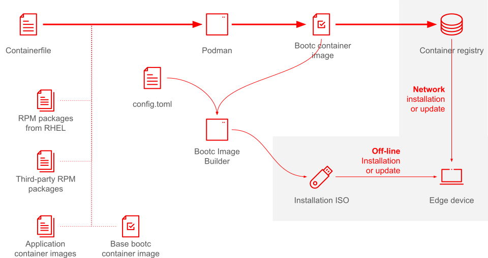

Connected and Disconnected Updates to Image Mode Systems
Estimated reading time: 7 minutes.
- Objective
-
Compare the processes for updating systems by switching bootc container images with the process of updating systems by updating individual RPM packages.
| Pending review |
Review of the image mode system installation and update workflows
This course focus on the final piece of the image mode system installation and update workflow, as highlighted by the following figure:

-
You start by building a new bootc container image embedding the updated systems software, application, and configurations. This is no different than building a bootc container image for initial provisioning of an image mode system.
-
Then you publish the new bootc container image in an OCI container registry, which can be directly accessed by image mode systems, such as edge devices, for network updates.
-
Alternatively, you store the new bootc container in a removable media, such as an USB thumb drive, which you can plug in image mode systems for disconnected updates. You can produce the media by using the bootc image builder utility or other means.
-
Finally, you use the bootc utility, on an image mode system, to update or switch to the new bootc image.
The new system image does not need to be an actual update of the previous system image: it could be a completely different image, providing some unrelated software and configurations. That means you could use the image mode update process to repurpose an edge device to perform a different function.
Building a bootc container image for an update is exactly the same as building it for initial provisioning of an image mode system. There is no need of making the previous image the parent of the new image or maintaining any kind of explicit relationship between the old and new images. You could just build a new image from the same Containerfile, to incorporate updates to its base image and RPM packages, but you could also make any changes you wish to the Containerfile, such as adding new packages, applications, and configuration files.
When applying updates to image mode systems, the bootc utility downloads (stages) the new system image, deploys it, and sets it to be the target of the next boot. The bootc utility keeps the currently running image untouched, so you can rollback to it if the need arises.
Updates with image mode vs. package mode
Image mode system updates work by replacing the entire system image with a new bootc container image. It is an all-or-nothing proposition: you cannot update only selected packages, like you can with image mode systems. But you get the possibility of easily reverting, or rolling back, to the previous system image if you find, after the fact, that the update was not good for a given device.
Image mode updates are also more reliable than updating a set of RPM packages in a package mode system, because you either replace the entire system image or don’t replace anything. Package mode updates, on the other hand, can end up being applied only partially, with some packages having being updated and others not. Unlike package mode systems, image mode systems are always in a well-defined state regarding all the system software and dependencies running on them.
The bootc utility does not provide for any special hooks for you to insert code which runs only during updates. You can incorporate code as Systemd units to handle update concerns such as database schema migration, but you must write that code to be able to distinguish between provisioning and updates by itself. This is different from RPM packages, which can run different scriptlets during installation and upgrades.
From the perspective of RPM packages, image mode systems are "never" updated, because their scriptlets run at image build time. They do NOT run in the live systems being installed or updated. That means you may need to add code to a bootc container image, to support updates, which would be unnecessary with package mode systems.
It is possible to apply individual RPM package updates to an image mode system, but these updates happen in an ephemeral storage layer which is discarded at reboot. This is useful to perform troubleshooting, for example to validate that a newer version of a package solves an issue, before you build a new container image including the new version.
Bootc also integrates with the greenboot technology from RHEL for edge, so if an image update is so bad that it cannot finish boot, greenboot rollbacks to the previous bootc container image. Notice that, by default, rollback would trigger only for "catastrophic" failures such as kernel panics. If your new image boots but some services and applications fail to start, greenboot will NOT rollback, unless your your bootc container image provides configurations and scripts to detect those failures and trigger a rollback.
Unlike package mode, where a greenboot by itself can only revert to an older kernel, but cannot undo other package updates, and consequently attempt to reboot into an unworkable system, automatic rollback from image mode is likely to restore system availability.
State of application data and system configurations after an image mode update
When the bootc utility downloads and applies (or deploys) a new bootc container image it does not touch the previous image and its deployment, so you can rollback to it if the need arises.
Notice that bootc preserves more than the system image, but also the state of its configuration data, that is, all of its /etc directory tree, as it was at the time the update was initiated.
Bootc image updates perform a three-way merge of the /etc directory, which enables the new image to provide new or changed configuration files, while preserving any local change to these files.
When you rollback to the previous images, it might not be compatible with the current state of /etc, as set by the new image, so bootc also rollbacks to the previous set of configuration files.
Application data, that is, the /var directory, is not touched by either updates or rollback operations from bootc.
If your update requires changes to application data formats, it must perform any conversion using an approach such as custom application code, a first-boot Systemd unit, or by means some day-2 automation technology such as Ansible.
In a similar way, if your rollback operation requires undoing data conversions, it must be done by custom code inside your bootc container image or by day-2 automation technologies. Bottom line is: the bootc utility provides no features to handle changes to application data during either updates or rollbacks.